Top
10 najlepszych filmów wszech czasów
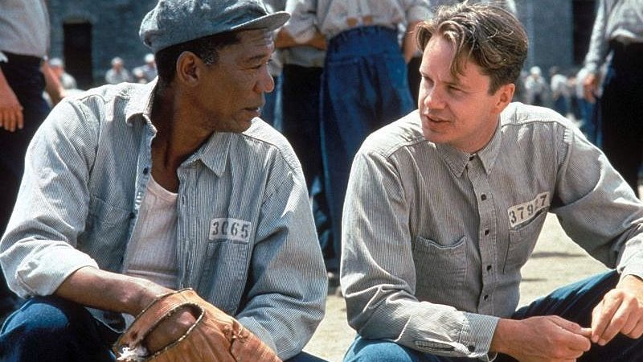
Skazani na Shawshank (1994)
Andy Dufresne jest młodym obiecującym bankierem. Jego życie zmienia się drastycznie, kiedy zostaje niesłusznie oskarżony o zamordowanie swojej żony i jej kochanka. Skazany na dożywocie, dostaje się do więzienia Shawshank, gdzie rządy sprawują sadystyczni strażnicy oraz dyrektor - hipokryta i oszust. Andy, żeby przeżyć lata jakie przyjdzie mu spędzić w celi, będzie musiał wykazać się sprytem i wolą przetrwania. Przygotowuje również misterny plan zemsty - tak zaskakujący, że zmyli nawet najbliższych współwięźniów.Intouchables (2011)
Ta historia zdarzyła się naprawdę. Sparaliżowany na skutek wypadku milioner zatrudnia do pomocy i opieki młodego chłopaka z przedmieścia, który właśnie wyszedł z więzienia. Zderzenie dwóch skrajnie różnych światów daje początek szeregowi niewiarygodnych przygód i przyjaźni, która czyni ich... nietykalnymi!Zielona mila (1999)
Rok 1935. Paul Edgecombe (Tom Hanks) jest jednym ze strażników bloku śmierci w więzieniu Cold Mountain. Do jego obowiązków należy odprowadzanie skazańców do celi śmierci długim korytarzem, wyłożonym zieloną wykładziną, zwaną "Zieloną milą". Pewnego dnia do więzienia przybywa olbrzymi czarnoskóry skazaniec, John Coffey (Michael Clarke Duncan). Ma oczekiwać na karę śmierci za zamordowanie dwóch białych dziewczynek. Jego wizyta na zawsze zmieni życie Paula i pozostałych pracowników więzienia.Ojciec chrzestny (1972)
W epickim arcydziele Francisa Forda Coppoli możemy podziwiać Marlona Brando w nagrodzonej Oskarem roli patriarchy rodu Corleone. Coppola z rozmachem kreśli portret sycylijskiego klanu w Ameryce, w chwilach wzlotów i upadków, po mistrzowsku ukazując zarówno prywatne życie rodziny, jak i ciemne interesy, w jakie się zaangażowała. Oparty na bestsellerowej powieści Mario Puzo, wspaniały film z wielkimi kreacjami Ala Pacino, Jamesa Caana i Roberta Duvalla otrzymał dziesięć nominacji do Oskara i zdobył trzy statuetki, w tym za film roku 1972.Dwunastu gniewnych ludzi (1957)
Opowiada historię ławy przysięgłych obradującej po procesie młodego chłopaka oskarżonego o morderstwo. Spośród dwunastu przysięgłych tylko jeden nie jest do końca przekonany o winie oskarżonego.Forrest Gump (1994)
Jeszcze nie było filmu, który jak "Forrest Gump" Roberta Zemeckisa z porywającą kreacją Toma Hanksa odniósłby równy sukces kasowy i artystyczny. W ciągu trzech burzliwych dekad Forrest zmienia się z lekceważonego inwalidy w gwiazdę amerykańskiego futbolu; z bohatera wojny w Wietnamie staje się królem krewetek; od honorów Białego Domu, przechodzi w ramiona ukochanej. Jest odzwierciedleniem naszej epoki, ostatnim niewinnym w czasach, kiedy Ameryka utraciła swoją niewinność. Serce podpowiada mu w sprawach, których nie ogarnie jego umysł. Jest człowiekiem zasad, a jego sukcesy inspirują wszystkich. "Forrest Gump" to historia pewnego życia.Lot nad kukułczym gniazdem (1975)
McMurphy, szuler, dziwkarz i zabijaka, udaje wariata, żeby wykpić się od odsiadywania wyroku. Pobyt w szpitalu psychiatrycznym wydaje mu się dobrym żartem. Do chwili, gdy dowiaduje się, że nie odzyska wolności, dopóki nie uznają go za wyleczonego. Decyzja należy do Wielkiej Oddziałowej, z pozoru uosobienia słodyczy i dobroci, w rzeczywistości sadystki znęcającej się nad pacjentami. McMurphy, który buntuje przeciwko niej chorych, nagle zdaje sobie sprawę, że jeśli się przed nią nie ukorzy, nie opuści szpitala. Czy da się pokonać bezdusznemu Kombinatowi?Ojciec chrzestny II (1974)
Francis Ford Coppola kontynuuje trylogię "Ojciec chrzestny" ponownie współpracując z pisarzem Mario Puzo i ukazując losy dwóch pokoleń rodu Corleone w bezwzględnym dążeniu do władzy. Reżyser podzielił swój film na dwie części. W pierwszej, stanowiącej swoisty prequel, przedstawił losy młodego Don Vito, zagranego bezbłędnie przez Roberta De Niro, który za swą kreację otrzymał Oscara dla Najlepszego Aktora w Drugoplanowej Roli. Druga część, będąca kontynuacją oryginału, ukazuje przejmowanie przez Michaela (Al Pacino) władzy w mafijnej rodzinie. Ponownie gromadząc na planie wielu znakomitych aktorów, którzy przyczynili się do sukcesu pierwszego "Ojca Chrzestnego", Coppola stworzył bez wątpienia najlepszy sequel w dziejach kina. Film otrzymał jedenaście nominacji do Oscara i zdobył sześć statuetek, w tym za Najlepszy Film roku 1974.Lista Schindlera (1993)
ilm "Lista Schindlera" przedstawia prawdziwą historię zagadkowej postaci Oskara Schindlera, członka partii nazistowskiej, kobieciarza, wojennego spekulanta, który... ocalił życie ponad 1100 Żydów w okresie holocaustu. Jest to trumf człowieka, który zdołał zmienić bieg historii i dramat tych, którzy przetrwali jednych z najbardziej mrocznych rozdziałów w historii ludzkości.Władca Pierścieni: Powrót króla (2003)
Nadszedł ten czas. Czas Frodo, który musi pokonać przebiegłego Golluma, przetrwać przerażający atak olbrzymiego pająka Sheloby i oprzeć się zniewalającej mocy Pierścienia, który niesie za sobą zniszczenie i zgubę. Czas Aragorna, który musi dobyć miecza swych przodków i przyjąć koronę swojego dziedzictwa. Czas potężnego starcia, które czarodziej Gandalf nazwał największą bitwą naszych czasów. Nadszedł też czas inspirującej kulminacji trylogii opartej na klasyce literatury autorstwa J.R.R. Tolkiena. Po raz trzeci film z kultowej trylogii zdobył nominację do Nagrody Akademii w kategorii Najlepszy film i po raz pierwszy ją otrzymał (oraz 10 innych). Król zasłużył na swoją koronę.
Źródło: Filmweb - Ranking, Dlastudenta.pl - Opisy filmów
5 najlepszych aktorów wszech czasów
Joaquin Phoenix
Brat legendarnego, zmarłego przedwcześnie aktora, Rivera Phoenixa i trójki innych artystów filmowych - Raina, Liberty i Summer. W dzieciństwie często podróżował wraz z rodziną, jako członek Kościoła, Children of God, którego misjonarzami byli jego rodzice. Karierę aktorską rozpoczął bardzo wcześnie, pojawiając się już jako dziesięciolatek w telewizyjnych produkcjach, jak choćby "Kids Dont Tell", czy "Morningstar/Eveningstar". Występował w nich pod pseudonimem Leaf Phoenix. Na dużym ekranie zadebiutował w roku 1986 w "Spacecamp". Dobrze przyjęty został jego występ w "Spokojnie Tatuśku", po którym jednak Joaquin postanowił wycofać się na jakiś czas z udziału w produkcjach filmowych, by zwiedzić trochę świata wraz z ojcem. Ponownie stał się znany w roku 1993, za sprawą głośnego skandalu, jaki wybuchł, gdy jego brat River zmarł wskutek przedawkowania narkotyków w klubie Jonny'ego Deppa, The Viper Room. Wtedy to, cały świat obiegło zdjęcie Joaquina, dzwoniącego na policję. Do filmu powrócił w roku 1995 w "Za wszelką cenę" Gusa Van Santa (który wyreżyserował wcześniej kultowe "Moje własne Idaho" z Riverem w roli głównej), u boku Nicole Kidman. Stworzona tam kreacja przyniosła mu uznanie krytyki i zaowocowała angażem do "Drogi przez piekło" Stone'a, gdzie partnerowali mu Sean Penn, Nick Nolte i Jennifer Lopez. W 1997 roku, na planie "Inventing the Abbotts" poznał swoją przyszłą partnerkę życiową, Liv Tyler, z którą pozostawał w związku przez trzy lata. Największą sławę przyniosła mu rola samolubnego, sfrustrowanego i chorobliwie ambitnego cesarza rzymskiego w "Gladiatorze" Ridleya Scotta, gdzie zagrał u boku Russela Crowe. Świetną kreację stworzył także w "Zatrutym piórze" jako targany rozterkami ksiądz w zakładzie dla obłąkanych, gdzie przetrzymywany był markiz de Sade.Jack Nicholson
"Będzie jedną z największych gwiazd filmowych wszystkich czasów" (New York Sunday Times, 6.04.1975). Tak mówił o przyszłości Jacka Nicholsona reżyser Mike Nichols. I nie mylił się. Dzisiaj Nicholson uważany jest za jednego z najwybitniejszych aktorów kina amerykańskiego. Jednak mało kto wie, iż zaczynał pracę jako goniec w dziale kreskówek wytwórni MGM w Los Angeles, tam też studiował w szkole aktorskiej Jeffa Coreya. Początki jego kariery to role w niskobudżetowych horrorach w reżyserii Rogera Cormana. Zauważony został dopiero w 1969 r. po filmie "Swobodny jeździec", w którym zagrał rolę uzależnionego od alkoholu adwokata. Zaowocowała ona nominacją do Oscara dla najlepszego aktora drugoplanowego. Od tego momentu kariera Nicholsona potoczyła się błyskawicznie. Obecnie może poszczycić się posiadaniem trzech statuetek Oscara. Krytycy twierdzą, że swoją karierę zawdzięcza demonicznemu czarowi i idącemu z nim w parze szerokiemu uśmiechowi, który zyskał sobie nazwę "uśmiechu mordercy".Leonardo DiCaprio
Anegdota mówi, iż w czasie ciąży matka DiCaprio często odwiedzała różnego rodzaju wystawy i muzea, twierdząc, że kontakt ze sztuką od najwcześniejszych dni uczyni z jej dziecka artystę. Podczas jednej z takich eskapad poczuła, że synek zaczyna się poruszać, a ponieważ stało się to, kiedy podziwiała jeden z obrazów Da Vinci zdecydowała się na nazwanie swojego dziecka imieniem mistrza - Leonardo. Nie wiadomo ile w tej historii jest prawdy a ile kłamstwa, ale faktem jest, że Leonardo DiCaprio zalicza się dziś do jednego z najlepszych aktorów amerykańskiego kina. Pierwszy raz przed kamerą stanął w wieku 5. lat w serialu "Romper Room". Nie był to zbyt udany start, ponieważ Leonardo prawie został wyrzucony z planu za złe zachowanie. Później parokrotnie występował w reklamówkach i programach edukacyjnych, ale oficjalnie za jego pierwszą ważną rolę uznaje się występ w filmie "Critters 3". W roku 1993 otrzymał swoją "wielką szansę". Po pokonaniu 400. konkurentów podczas trwającego 4 miesiące "castingu" zdobył rolę u boku Roberta De Niro i Ellen Barkin w filmie "Chłopięcy świat". Krytycy byli zachwyceni. Kolejny występ w "Co gryzie Gilberta Grape'?" wprawił widzów w osłupienie. DiCaprio, wcielając się w postać niepełnosprawnego Arniego Grape'a, stworzył postać tak rzeczywistą i przekonywającą, że wielu ludzi wychodziła z kina myśląc, iż oglądali na ekranie naprawdę chorego człowieka.Alan Rickman
Alan Rickman karierę rozpoczynał w Anglii. Debiutował na scenie teatralnej, na której też odniósł swoje pierwsze sukcesy. Pod koniec lat 70. przyłączył się do Royal Shakespeare Company, z którą pozostał związany przez prawie 10 lat. Okres ten zaowocował wieloma doskonałymi kreacjami w takich spektaklach jak: "Captain Swing", "Mephisto" czy "Niebezpieczne związki". Przed kamerami zadebiutował w roku 1978 w teatrze telewizji w sztuce "Romeo i Julia". Popularność jako aktor filmowy zyskał dopiero 10 lat później, gdy w 1988 roku wystąpił w roli Hansa Grubera w kasowym przeboju "Szklana pułapka". Otrzymał za nią doskonałe recenzje i zwrócił na siebie uwagę producentów filmowych. W 1991 roku wystąpił w kosztownej ekranizacji przygód banity z Sherwood "Robin Hood: Książę złodziei" i jako szeryf Nottingham stworzył kreację, która przyćmiła rolę Costnera. W 1997 roku zadebiutował jako reżyser obrazem "Zimowy gość". Był to bardzo udany start, ponieważ za swoją pracę otrzymał liczne nagrody i wyróżnienia, w tym nominację do Złotego Lwa na festiwalu w Wenecji. Wśród młodszych pokoleń znany jest przede wszystkim za wcielenie się w postać profesora Severusa Snape'a w serii filmów o Harrym Potterze.Al Pacino
Urodził się w rodzinie włoskich emigrantów w Nowym Jorku. Tam też uczęszczał do Wyższej Szkoły Aktorskiej, którą porzucił by przenieść się do Herbert Berghof Studio. Swoją pierwszą ważną rolę filmową zagrał w 1971 roku w obrazie pt. "Narkomani". Kolejny film - "Ojciec chrzestny" - przyniósł mu nie tylko sławę, ale i nominację do Oscara. Pacino urósł do rangi wybitnego aktora, a każda następna rola tylko to potwierdzała. Tak było do roku 1977, kiedy to artysta uczynił fałszywy krok. Wystąpił wtedy w filmie pt. "Bobby Deerfield", który okazał się kompletną klapą. Podobnie było z następnymi obrazami "...I sprawiedliwość dla wszystkich", "Zadanie specjalne", czy "Rewolucja", które również nie spotkały się przychylnym przyjęciem zarówno ze strony krytyków, jak i publiczności. Popularność odzyskał dopiero w 1989 roku po filmie "Morze miłości". Od tamtej pory pozostaje cały czas na szczycie. W 1993 roku został nominowany do Oscara w dwóch kategoriach: najlepszy aktor i najlepszy aktor drugoplanowy. Al Pacino występował również na Broadwayu. W 1977 roku otrzymał nagrodę Tony za rolę w sztuce "The Basic Training of Pavlo Hummel".
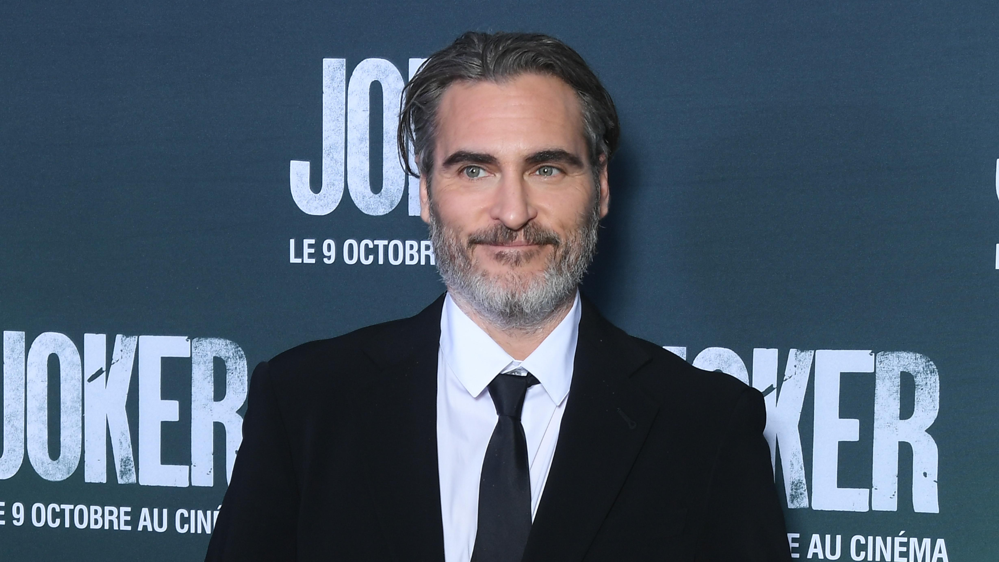
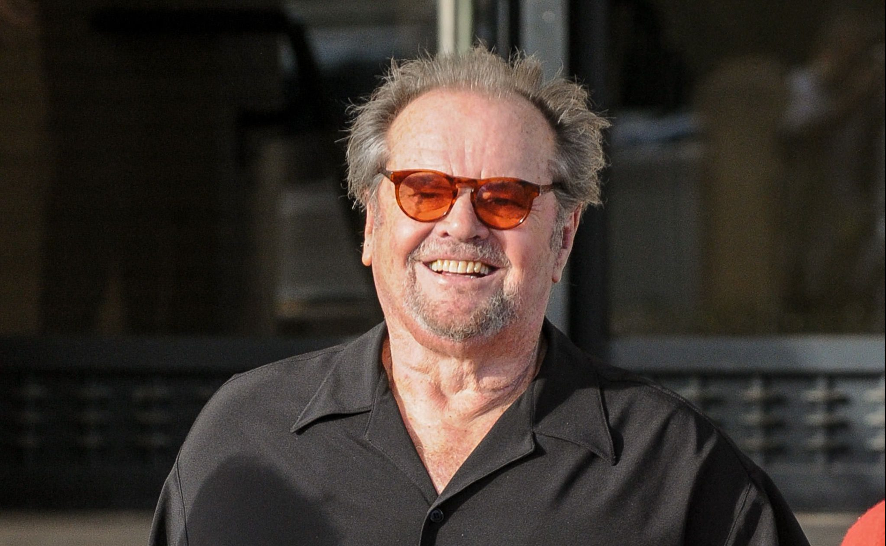
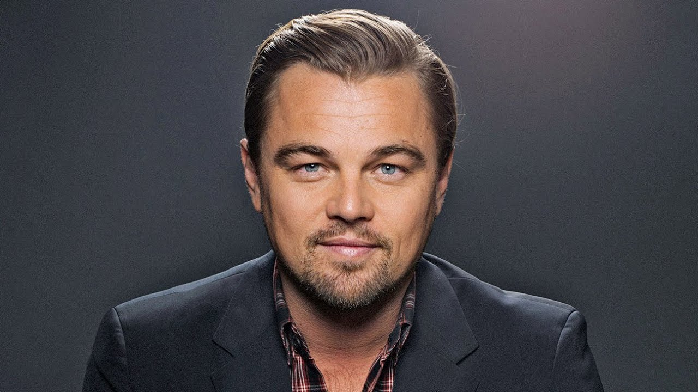
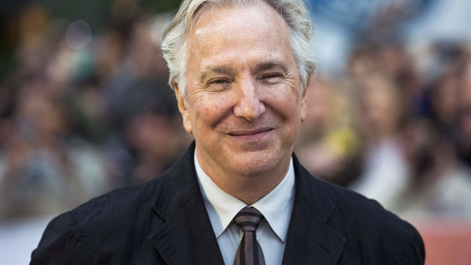
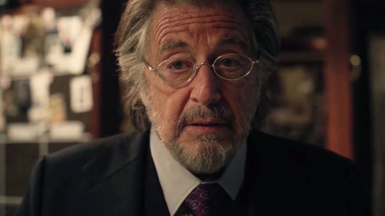
Źródło: Filmweb
5 najlepszych aktorek wszech czasów
Maggie Smith I
Jedna z najwybitniejszych brytyjskich aktorek. Laureatka dwóch Oscarów: jednego za rolę główną, drugiego za drugoplanową. Jej rodzice to Margaret Hutton Little - sekretarka z Glasgow i Nathaniel Smith - lekarz z Newcastle. Ma też dwóch starszych braci bliźniaków. Jest absolwentką Oxford High School, choć ponoć nie najlepiej wspomina swoje doświadczenia w tej placówce. Karierę rozpoczynała od gry w Oxford Playhouse, a na ekranie debiutowała w 1956 roku. W 1960 roku dołączyła do zespołu Royal National Theatre, gdzie zagrała Desdemonę w "Otellu" a towarzyszył jej Laurence Olivier. Rolę tę powtórzyła w nakręconym w 1965 roku "Otellu". Aktorka otrzymała wówczas swoją pierwszą nominację do Oscara. Pierwszą statuetkę zaś odebrała za rolę nauczycielki w "Pełni życia panny Brodie". Drugą statuetkę odebrała dziewięć lat później za drugoplanową rolę w "Suicie kalifornijskiej". Grający z nią w niej Michael Caine ostrzegł Michaela Palina, który miał zagrać w kolejnym filmie Maggie, że ukradnie mu film. W 1992 roku stworzyła niezapomnianą rolę Matki Przełożonej w komedii "Zakonnica w przebraniu". W 1999 roku zagrała w filmie telewizyjnym "Herbatka z Mussolinim", gdzie grała też wdowa po Olivierze, Joan Plowright. Maggie Smith pozostaje aktywna zawodowo mimo zaawansowanego wieku. Jak mówi, w tzw. "wieku babcinym" otrzymywanie propozycji jest szczególnie cenne. Aktorka wystąpiła w filmach o Harrym Potterze. Zagrała też w filmie o Jane Austen "Zakochana Jane" z Anne Hathaway w roli znanej pisarki. Maggie początkowo chciała występować pod swoim rodowym imieniem i nazwiskiem, ale okazało się, że jest już aktorka o imieniu Margaret Smith. Aktorka dwukrotnie wychodziła za mąż. Z pierwszym mężem ma dwóch synów. Z drugim była do jego śmierci w 1998 roku.Helena Bonham Carter
Helena Bonham Carter pochodzi z jednej z najbardziej szanowanych rodzin arystokratycznych w Anglii. Jest prawnuczką lorda Herberta Henry'ego Asquitha, byłego premiera Wielkiej Brytanii, i wnuczką lady Violet Bonham Carter, członkini Izby Lordów, a także krewną reżysera i scenarzysty Anthony'ego Asquitha. Niestety, mimo tak doskonałego pochodzenia i dobrej sytuacji finansowej rodziny, dzieciństwo Heleny nie należało do najszczęśliwszych. Kiedy miała 5 lat, jej matka przeżyła silne załamanie nerwowe i przez długi czas pozostawała pod opieką psychiatry, ojciec zaś kilka lat później doznał poważnego wylewu, który go częściowo sparaliżował i pozbawił wzroku. Sytuacja ta sprawiła, iż Helena szybko wydoroślała i nauczyła się samodzielności. Kiedy miała 13 lat, za pieniądze wygrane w konkursie recytatorskim umieściła swoje zdjęcia u jednego z agentów odpowiedzialnych za wynajdowanie nowych twarzy do filmów. Dwa lata później po raz pierwszy stanęła przed kamerami. Wystąpiła wtedy w reklamówce sprzętu hi-fi, w której wcieliła się w postać Julii. Kiedy przyszła gwiazda skończyła 17 lat, reżyser Trevor Nunn zaangażował ją do swojego filmu "Lady Jane", w którym aktorka odtwarzała rolę tytułową. Był to jej debiut na dużym ekranie. W tym samym roku, zaledwie dwa dni po zakończeniu zdjęć do "Lady Jane", rozpoczęła pracę na planie obrazu realizowanego przez duet Merchant-Ivory - "Pokój z widokiem". Rola w tym filmie przyniosła jej międzynarodową popularność i bardzo dobre recenzje krytyków, którzy zaczęli pisać o pojawieniu się nowej wielkiej aktorskiej osobowości. Od tej chwili kariera artystyczna Heleny Bonham Carter potoczyła się bardzo szybko. Wystąpiła jeszcze w dwóch obrazach spółki Merchant-Ivory: "Maurice" i "Powrót do Howards End", a w 1990 roku zagrała u boku Mela Gibsona i Glenn Close w filmowej adaptacji "Hamleta" Williama Szekspira, która przyniosła aktorce rewelacyjne recenzje. Helena jest również utalentowaną aktorką komediową. W 1995 roku wystąpiła u boku Woody'ego Allena w obrazie "Jej wysokość Afrodyta". Podczas kręcenia "Planety małp" poznała Tima Burtona, z którym ma dwójkę dzieci - syna Billy'ego Raymonda i córkę Nell. Para współpracowała przy wielu filmach, między innymi: "Dużej rybie", "Gnijącej pannie młodej", "Charliem i fabryce czekolady", "Sweeney Todd: Demoniczny golibroda z Fleet Street", "Alicji w Krainie Czarów" czy "Mrocznych cieniach", w których Helena niejednokrotnie występowała u boku Johnny'ego Deppa. Wcieliła się także w postać Bellatrix Lestrange w serii filmów o Harrym Potterze oraz królową Elżbietę w filmie "Jak zostać królem" i księżniczkę Małgorzatę w serialu "The Crown". Jest laureatką wielu prestiżowych nagród, w tym Nagrody Brytyjskiej Akademii Filmowej (BAFTA Award), Critics' Choice Movie Award i Nagrody Gildii Aktorów Ekranowych (SAG Award).Jessica Lange I
Urodziła się w rodzinie komiwojażera. Młodość spędziła w Paryżu, gdzie prowadziła żywot hippiski i uczyła się sztuki mimów. W wieku 27 lat zadebiutowała w filmie rolą Dwan w nowej wersji "King Konga". Film okazał się wielkim niewypałem i mimo iż Lange otrzymała przychylne recenzje, na następną rolę musiała czekać aż 3 lata. Z pomocą przyszedł jej ówczesny narzeczony Bob Fosse, który zaangażował ją do jednej z ról w swoim obrazie "Cały ten zgiełk". Jednak dopiero występ w "Listonosz zawsze dzwoni dwa razy" uczynił z niej gwiazdę. Rok 1982 jest szczególnie ważny w jej karierze. Wtedy bowiem wystąpiła w dwóch filmach: "Tootsie" i "Frances". Za obie kreacje została zgłoszona do Oscara. W rezultacie otrzymała tylko jedną statuetkę, ale przez krytyków zaczęła być uważana za jedną z najważniejszych aktorek lat 80. W 1992 r. Jessica Lange zadebiutowała na Broadwayu w "Tramwaju zwanym pożądaniem" Tennessee Williamsa. Rola okazała się tak wielkim sukcesem, że powtórzyła ją w 1995 r. w filmie telewizyjnym. Od 1982 r. związana jest z Samem Shepardem, który jest jej partnerem nie tylko w życiu, ale i na ekranie. Wspólnie zrobili takie filmy jak: "Frances", "Country" i "Zbrodnie serca".Margot Robbie
Margot Elise Robbie urodziła się 2 lipca 1990 roku w Dalby, w australijskim stanie Queensland. Jej rodzicami są Sarie Kessler, fizjoterapeutka oraz Doug Robbie, były właściciel farmy. Margot ma trójkę rodzeństwa: starszą siostrę Anyę, starszego brata Lachlana oraz młodszego brata Camerona. Aktorka dorastała na farmie swoich dziadków, gdzie wraz z rodzeństwem samotnie wychowywała ich matka. Aby związać koniec z końcem, Robbie w wieku 16 lat podjęła pracę w trzech miejscach jednocześnie. Pracowała m.in. w: aptece, biurze oraz cateringu. W 2007 roku ukończyła Somerset College w Gold Coast. Mając 17 lat, znalazła agenta i przeprowadziła się do Melbourne, by spróbować swoich sił w aktorstwie. Początki kariery Margot Robbie nie były spektakularne.W 2013 roku nastąpił przełom w karierze Margot Robbie. We wrześniu tego roku swoją premierę miała komedia romantyczna "Czas na miłość", w której Margot zagrała razem z Rachel McAdams oraz Domhnallem Gleesonem. Dwa miesiące później na ekrany kin wszedł głośny film Martina Scorsese – „Wilk z Wall Street”, w którym główną rolę zagrał Leonardo DiCaprio. Poza gwiazdorem Hollywood, wiele pozytywnych opinii zebrała również Margot Robbie, która wcieliła się w postać drugiej żony głównego bohatera, pojawiając się z nim w kilku odważnych scenach. Dwa lata później Robbie zagrała we "Francuskiej suicie", obok takich gwiazd jak Michelle Williams i Kristin Scott Thomas. Kolejnym filmem Australijki był zaś "Z jak Zachariasz", gdzie zagrała główną rolę, zbierając później dobre recenzje za swój występ. W 2015 roku aktorka wystąpiła także w filmie "Focus", traktującym o profesjonalnym oszuście, który uczy i wprowadza w ten świat młodą dziewczynę. Pierwotnie role miały przypaść Ryanowi Goslingowi i Emmie Stone, jednak po odrzuceniu przez nich propozycji, zagrali je Will Smith i Margot Robbie. Następnie Australijka zagrała gościnnie samą siebie w produkcji "The Big Short".Angelina Jolie
Angelina Jolie pochodzi z aktorskiej rodziny. Jej ojcem jest laureat Oscara Jon Voight, a matką aktorka Marcheline Bertrand. Przed kamerami Angelina zadebiutowała w wieku 5 lat u boku swojego ojca w filmie "Szukając wyjścia". Kiedy skończyła 11 lat, rozpoczęła naukę w elitarnej szkole Lee Strasberg Theater Institute, gdzie uczyła się podstaw pracy aktora. W wieku 16 lat Jolie została zatrudniona jako modelka i w krótkim czasie jej twarz zaczęła być znana. Dzięki swojej urodzie często była angażowana do występów w wideoklipach, m.in. takich sław jak Meatloaf, Lenny Kravitz czy The Rolling Stones. Z czasem jednak okazało się, że aktorstwo to jedyna dziedzina sztuki, która naprawdę pasjonuje Angelinę. Wstąpiła do trupy aktorskiej Met Theatre Group, gdzie u boku Eda Harrisa i Holly Hunter doskonaliła swój warsztat aktorski. Swoją pierwszą poważną rolę Jolie zagrała w roku 1993 w obrazie "Cyborg 2". Niestety przeszła ona bez echa. Pierwsze dobre recenzje Angelina dostała dopiero w roku 1995 po premierze filmu "Hackerzy". Obraz okazał się niewypałem, ale krytycy zgodnie stwierdzili, że kreacja, którą Jolie stworzyła w tym filmie, zasługuje na uznanie. Niestety, mimo pochlebnych opinii na swoją wielką szansę aktorka musiała poczekać jeszcze dwa lata. W 1997 r. wystąpiła u boku Gary'ego Sinise w telewizyjnym obrazie "George Wallace". Za rolę w tym filmie Angelina otrzymała Złoty Glob, a jej nazwisko stało się znane w filmowym światku. Dwa lata później Jolie otrzymała kolejny Złoty Glob, tym razem już dla najlepszej aktorki, za kreację, którą stworzyła w obrazie "Gia". Swoją pozycję gwiazdy Jolie ugruntowała ostatecznie, zdobywając Oscara za rolę w filmie "Przerwana lekcja muzyki".
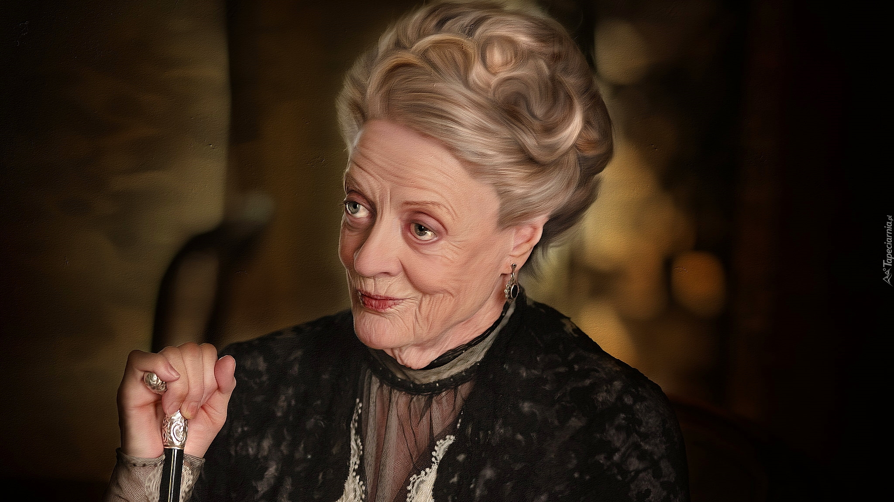
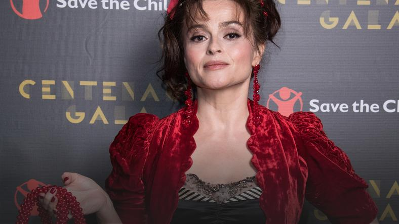
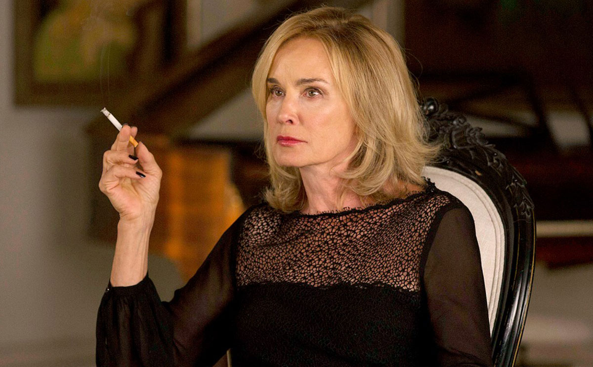
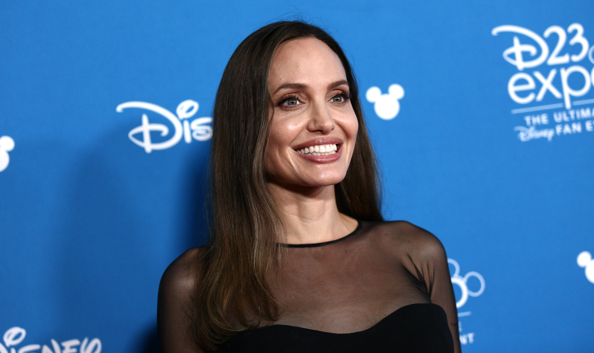
Źródło: Filmweb
5 najlepszych seriali
Nasza Planeta (2019)
Widowiskowe ujęcia rzadko spotykanych zwierząt zostają zestawione z gorzkimi refleksjami o wpływie ludzkości na ich siedliska i inne gatunki zamieszkujące naszą planetę.Najlepsze odcinki
- Sezon 1, Odcinek 3 - Dżungle i lasy deszczowe są domem dla niezliczonych gatunków zwierząt, w tym ptaków tropikalnych, inteligentnych orangutanów i niezwykle ambitnych mrówek.
- Sezon 1, Odcinek 2 - Niedźwiedzie polarne, morsy, foki i pingwiny stoją w pierwszym szeregu podczas walki ze zmianami klimatu, które mocno uderzają w ich mroźne siedliska.
- Sezon 1, Odcinek 8 - Poznaj delikatne współzależności występujące między mieszkańcami lasu — takimi jak bieliki amerykańskie, likaony pstre i tygrysy syberyjskie.
Czarnobyl (2019)
Po wybuchu elektrowni jądrowej w Czarnobylu ratownicy poświęcają zdrowie i życie, by ratować Europę przed skutkami katastrofy.Najlepsze odcinki
- Odcinek 3 - Ludmiła Ignatenko (Jessie Buckley) z Prypeci ignoruje słowa lekarzy, którzy ostrzegają ją, że jej mąż (Adam Nagaitis) został napromieniowany podczas akcji ratowniczej. Walery Legasow (Jared Harris) opracowuje plan likwidacji skutków awarii, który zakłada ofiary w ludziach.
- Odcinek 5 - Walerij Legasow (Jared Harris), Borys Szczerbina (Stellan Skarsgård) i Ulana Chomiuk (Emily Watson) stawiają na szali własne życie i dobre imię, żeby ujawnić prawdę o Czarnobylu.
- Odcinek 2 - Po katastrofie w Czarnobylu, która stwarza zagrożenie dla milionów ludzi, fizyczka jądrowa Ulana Chomiuk (Emily Watson) podejmuje desperacką próbę, żeby skontaktować się ze znanym radzieckim fizykiem jądrowym Walerym Legasowem (Jared Harris) i ostrzec go przed ryzykiem drugiego wybuchu, który może mieć katastrofalne skutki dla całej Europy.
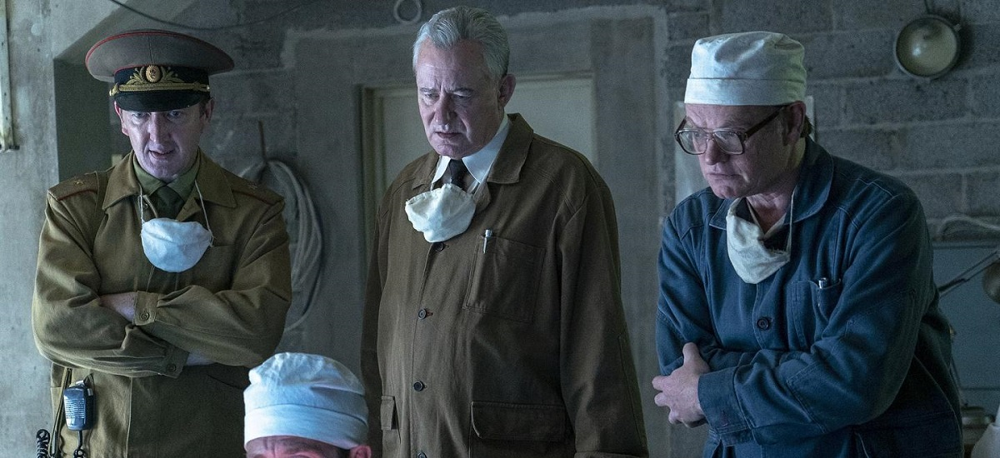Gra o Tron (2011)
Adaptacja sagi George'a R.R. Martina. W królestwie Westeros walka o władzę, spiski oraz zbrodnie są na porządku dziennym.Najlepsze odcinki
- Sezon 6, Odcinek 10
- Sezon 6, Odcinek 9
- Sezon 3, Odcinek 9
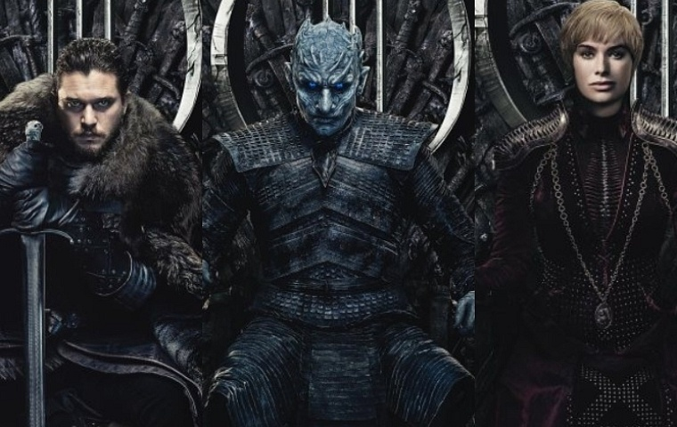Breaking Bad (2008)
Gdy nauczyciel chemii dowiaduje się, że ma raka, postanawia rozpocząć produkcję metamfetaminy, by finansowo zabezpieczyć swoją rodzinę.Najlepsze odcinki
- Sezon 5, Odcinek 16 - Wielokrotnie nagradzany serial zmierza do nieoczekiwanego dramatycznego finału.
- Sezon 4, Odcinek 13 - Gdy plan pozbycia się Gusa spełza na niczym, Walt i Jesse dwoją się i troją, aby zatrzeć ślady i uniknąć pewnej śmierci.
- Sezon 5, Odcinek 14 - Serial zaczyna zmierzać do końca i zdaje się, że wszyscy pogodzili się z całkowicie odmienionymi realiami.
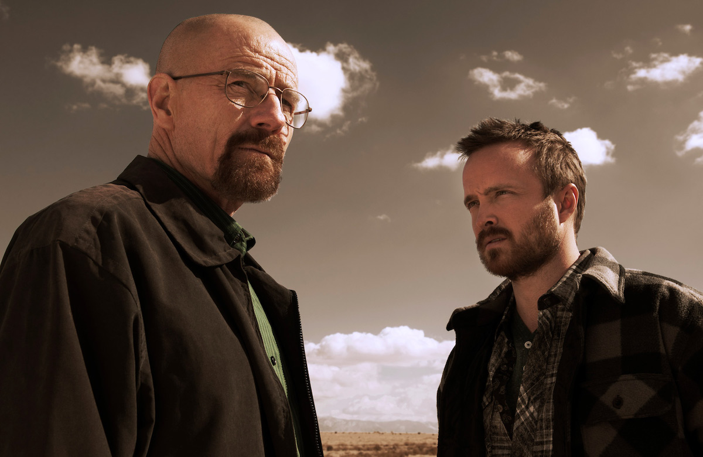OSTATNI TANIEC (2020)
Serial dokumentalny o karierze Michaela Jordana i legendarnej drużynie Chicago Bulls z lat 90. Zawiera niepublikowane dotąd nagrania z sezonu 1997–1998.Najlepsze odcinki
- Odcinek 10 - Wycieńczona drużyna Chicago Bulls kończy swój „ostatni taniec” z szóstym tytułem mistrza na koncie. Michael, Phil i pozostali zawodnicy podsumowują koniec pewnej ery.
- Odcinek 9 - Rok 1997. Zawodnicy Chicago Bulls muszą zaciekle walczyć o wygraną z Utah, a rok później z Indianą. Steve Kerr zapisuje się w historii drużyny.
- Odcinek 8 - Powrót Michaela elektryzuje drużynę, miasto i całe NBA, a przegrana w fazie play-off w 1995 roku jeszcze bardziej motywuje go do ciężkiej pracy i powrotu na szczyt.
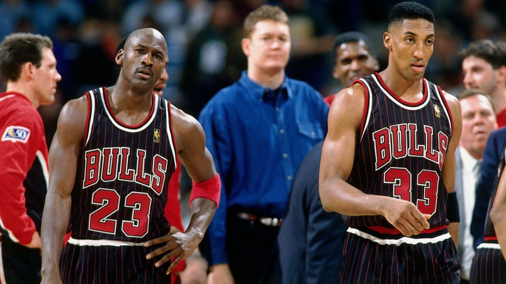
Źródło: Filmweb